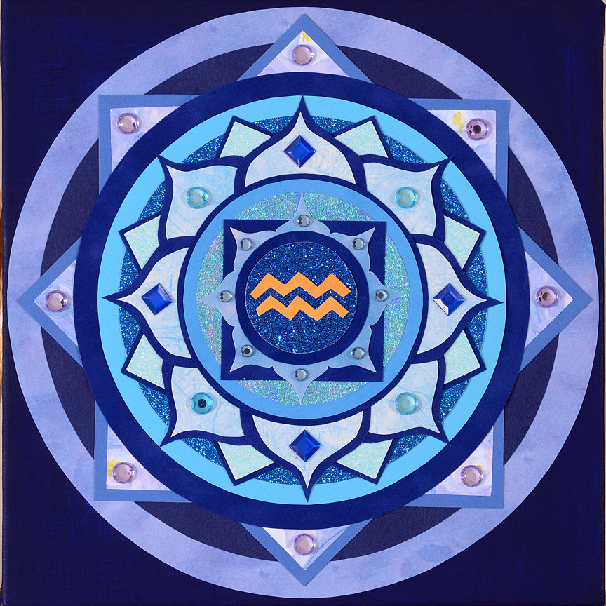

Embracing the Adventure of a Uranus Cycle
The following article was published in The Mountain Astrologer Magazine.

Have you ever experienced a small electric shock, giving you that sharp jolt of energy that causes you to jump? No doubt you have. You know how it energizes your senses and snaps your attention fully into the moment, so that you’re completely aware and alert. That sudden, shocking surprise triggers a sensorial rush, while your adrenaline surges because of the zap coming out of the blue.
We feel a similar thrill when we ride a roller coaster — especially when we’re riding it for the first time, and we don’t know the track’s course. In this thrill of adventure, there is an “in the moment” awareness as we deal with sharp turns, sudden steep drops, and upside-down spins through breathtaking 360-degree loops. The special excitement, the tingling sensation we feel, comes from the sensory stimulation and even the sense of danger.
Electric shocks and roller-coaster rides are akin to Uranus cycles you may experience. Surprise, sudden change, and unexpected jolts are common during one of these powerful transits or solar arcs. We move into a primal awareness of the present moment when this happens, our natural tendencies kick in, and we respond with quick reflexes. Our reactions often bypass our intellect and spring instead from our instincts.
Are you ready to embrace the adventure, harness the energy and “ride” your Uranus cycle to higher spiritual ground?
What Do Uranus Cycles Teach Us?
Let’s examine the spiritual purpose and potentially profound impact of a Uranus transit or solar arc. What is our opportunity for expansion and personal evolution? How can we use a Uranus cycle for maximum development and growth on the soul level?
The purpose of a Uranus cycle is to break up stagnation, plain and simple. The energy from Uranus throws symbolic bolts of lightning that use a sudden burst of shocking “spiritual electricity” to shatter what is crystallized and loosen what is stuck.
Another analogy is the jackhammer that tears apart concrete by using rapid, powerful bursts of irresistible force. Or dynamite that explodes, blowing up whatever is static or “stuck”. We could also include the “spark” to the dead battery in our car that jumper cables offer. This jolt of electricity gets things moving.
We need to remember this purpose — breaking up stagnation — because sometimes, when we’re in the middle of a disruptive Uranus cycle, we lose sight of the fact that there is actually a benefit to all this upheaval. The unexpected change that these cycles bring can often be emotionally jarring, but nonetheless helpful.
The prominent British astrologer and author Alan Leo called Uranus the “Awakener” planet. And indeed it is, often causing us to awaken with a start. When crystallization is shattered, a new pattern can be created. Often, we don’t see this until the old way is broken apart. We are awakened to a new way of seeing and doing things.
Uranus cycles can also trigger feelings of restlessness and a desire for freedom and adventure. Once we release what we’ve outgrown, we feel liberated. We are able to move forward through life, traveling light instead of dragging heavy baggage behind.
Expect, and Accept, the Unexpected
When a Uranus transit or solar arc comes knocking on our door, it’s often demanding and unrelenting, like the raven in the poem of the same name by Edgar Allan Poe. The better part of wisdom here is to willingly surrender to the fact that our routine will be disrupted.
Now, some people respond better than others to this frequency, this cyclic wave of change. Cardinal signs are usually willing to spring into action — wanting to do something when the unexpected surges into their life. Mutable signs often relax into the flow — exhibiting the flexibility that comes naturally to them.
Fixed signs are most prone to digging in their heels and resisting. (Imagine dragging a scared dog by the leash into the veterinarian’s office.) Their need for repetition and routine makes Uranus cycles particularly challenging for them. The change is brought on too abruptly, too quickly. Fixed signs need time to warm up to a new direction.
Being a big fan of J. R. R. Tolkien, I’m reminded of his classic creation, The Hobbit — wherein the wizard Gandalf pulls Bilbo Baggins of the Shire into an adventure that forever changes Bilbo’s life of routine and repetition. Bilbo resembles someone with a fixed sign, such as the Sun. The Hobbit is firmly attached to habit, secure in the comfort and familiarity it offers. He is initially resistant to Gandalf’s invitation to adventure, protesting, “We are plain, quiet folk, and I have no use for adventures. Nasty disturbing uncomfortable things! Make you late for dinner! I can’t think what anybody sees in them.
Gandalf doesn’t give up with Bilbo’s first rejection. He urges again, with Bilbo snapping, “We don’t want any adventures here, thank you!” Still not giving up, Gandalf finally says, “I will go so far as to send you on this adventure. Very amusing for me, very good for you — and profitable too, very likely, if you ever get over it.”
Bilbo, not understanding that he really has no choice in the matter, responds in the negative one last time, “Sorry! I don’t want any adventures, thank you. Not today. Good morning!” Gandalf then scratches a symbol on Bilbo’s door, and the very next day unexpected guests start to arrive — the inevitable adventure begins.
Because Bilbo is forced out of his predictable routine —the stale and stagnant pattern in his life — he grows significantly as an individual. He is awakened to his inner potential and tremendous capacity to deal successfully with the unexpected. The little Hobbit learns that he is capable of far more than he realized. He steps into the spontaneous, the unknown, the challenging … and he flourishes.
This example, where Gandalf is the symbolic agent of disruption and change, mirrors a Uranus transit. We will often react as Bilbo did when our secure routine is threatened, and this is particularly so with fixed signs.
Immovable, Meet Irresistible
One of my clients, Cheryl, has a Taurus Sun and Midheaven (MC). In 1999, when Uranus was in Aquarius and formed a square to her Sun and MC, she went through a period where she realized that her career was not fulfilling. She was on a dead-end path with little opportunity for growth, and this area of her life seemed stagnant.
Cheryl started to feel the Uranus vibes of restless change a few months before the first contact, but didn’t want to quit her job. She felt huge emotional resistance to making a change. She preferred to stick with what was known, instead of venturing out into the unknown, despite the troubling sense of stagnation she was feeling.
When Uranus, the planet of Awakening, made the first direct connection to her Sun, Cheryl suddenly lost her job. BAM! The first lightning bolt from Uranus was thrown. She was shocked and spent the first few months of the transit almost in a state of denial as she wrestled with her Taurean need for security and her tendency to want things to remain the same.
After a few months, Cheryl was ready to make a slight life adjustment. She emotionally opened up enough (out of necessity) to apply for positions through a temp agency. She knew she needed more time to fully embrace a new career direction, and doing temp work would buy her a little breathing room. However, the idea of a job being only temporary really bothered her — her nature, her need, was to build something lasting!
Immediately upon opening to the possibilities, Cheryl began getting temp positions — each one having specific ending dates that she was given in advance. This triggered a new sort of trauma to her comfort zone, her sense of security: What would happen after the job ended? Would another opportunity come up?
In each situation, Cheryl would find a new position either on the very last day of a temp job or during the week right after the position ended. She had to wait till the last minute before the new opportunity would appear. At first, this was extremely stressful and nerve-wracking. Her nature was oriented to having a solid plan and something she could count on. It took her many months before she learned to relax into the uncertainty and to trust that when she needed something, it would be there for her.
This ability to relax into the unknown was a big breakthrough for my client. I remember her excitement when she realized that she really could handle change and uncertainty with becoming overly emotional. Cheryl had confronted a critical issue deep within her, one that had always held her back. She also tuned into the frequency of trust and the ability to handle temporary situations.
This awakening of capability allowed her to explore a new direction in her career, something she was unwilling to consider before the transit. And you know what? That new direction proved to be more rewarding and satisfying than she could have imagined.
Cheryl moved from a low paying dead end job to a new career where she feels stimulated, challenged, and appreciated. She was able to embrace the unknown and seek a position in a PR firm. She has been offered leadership positions and has increased her income considerably. Thank you, Uranus.
Resistance Is Futile
Most often during a Uranus transit, we will experience three exact “hits,” and this “tri-cycle” usually lasts about a year. Depending on how entrenched we are in our routine, the first hit is sometimes met with inner opposition. During the second contact, we may still resist, but the change has already started and pressure is building. The status quo has been challenged, and there is a need to start responding. The final hit necessitates the release of our resistance, our blockage, and demands action. Now we must deal with the change and grow.
A solar arc from Uranus will be strongest when the aspect is exact, but we need to remember that there is a slow buildup of energy starting six months before, and a gradual release over the following six months. Generally, we can say that the solar arc is active for about a year.
The Temporary Zone:
Staying in the Moment
During a Uranus cycle, we are thrust into a period of time when we live in a “temporary zone.” The transitional period (temporary zone) is felt most deeply when our Sun, Moon, or one of the angles in our horoscope receives a strong aspect (conjunction, semi-square, square, opposition, sesquiquadrate,) from Uranus. It’s so common to hear people who are in the middle of one of these cycles say, “For now, what I’m doing feels right, but I know it’s only temporary. I don’t know what’s next.”
The challenge is to handle this with grace and to stay open to the instructions from the Universe. One way I communicate this to clients is by saying, “Keep your engine in neutral — just idle until you get the ‘spark’ to move forward. Then shift into ‘drive’ and step on the gas.”
During a Uranus adventure, we are required to move to a new level of instant obedience when we get the signal to “act.” We are given no warning about when the ideas for the new direction will come. Out of the blue, we’ll be hit with a lightning bolt of inspiration, and the next step on our path will suddenly be revealed. When we receive the flash of illumination, we need to allow ourselves to respond quickly. There is an almost magical sense of perfect timing brought on from a Uranus cycle when we trust and act instantly. This is part of the adventure of spontaneous growth.
Not many cultures focus on the value of being “in the moment.” Certainly, we see athletes learning to master this type of consciousness — they must be fully present so that they can react instantly and respond to the unexpected in a game situation. They live in a state of perpetual readiness with quick reflexes — always prepared to make the adjustment that the moment requires.
I learned this when I was involved in martial arts, especially when we would spar. At the time, I had a chronic shoulder problem — very little force would cause it to dislocate. We did full contact sparring; we had padding, but that didn’t completely protect us from injuries or from the pain from a powerful kick or punch.
My Korean master didn’t know what to do with me. I was a woman with intense drive and a passion to learn and compete, and I showed enormous enthusiasm. Consequently, he would match me with very tall and heavy men when we sparred, which always gave them the advantage.
I had to confront quite a bit of fear every single time I entered the ring. Not only did I have to protect my shoulder, but I also faced an opponent who was bigger and stronger. Out of necessity, I learned to drop my energy into my belly and focus completely in the moment. I worked on trusting that I would be able to handle whatever happened. Believe me, it was not easy! I had many painful and shocking sparring rounds in the ring before I figured this out.
When I did make the shift in consciousness — and could completely bring my attention and focus into the competition at hand — I did well. It was powerful and impacted me tremendously. I learned on a deeply physical level that when I was fully present — with all my senses alive, alert, and aware — I stepped into an intense flow of energy.
Isn’t it interesting that I started my martial arts training just as transiting Uranus was approaching a square to my Sun, and I got my black belt when solar arc Uranus moved to the Aries point? My perspective on life and my approach to it changed because of my martial arts training, which was triggered by a Uranus transit.
The Uranus Buzz
There are some common but surprising physical side effects of a Uranus cycle. The high electrical energy from this planet sometimes manifests as a jittery, almost super-caffeinated feeling. This is most common when it’s a transit or solar arc to the Sun, Moon, Mercury, or Ascendant. I frequently hear clients mention that they have a hard time getting to sleep because they feel wound up and wired. When this happens, I always recommend consistent extra exercise to help burn off some of the excess energy.
Many people experience so much electricity coursing through the body during this cycle that they frequently burn out lightbulbs, short out appliances or drain the batteries in their watches. In these situations, gardening and contact with the earth can help, as there is a need to ground the electricity. Soaking in a tub of epsom salts will also offer relief.
I also mention to my clients that it’s beneficial to keep a pad of paper or a small digital recorder near them at all times when they are going through a Uranus cycle. It’s common to have a brilliant, innovative idea pop in — like a lightbulb suddenly turned on by the planet’s electric charge. So often, if the idea is not written down or recorded, the details quickly fade and are lost. We need to embrace inventive energy and relish the “outside the box” thinking that the energy of this planet stimulates, and we need to be ready to bring it into form by taking action when we get the signal.
There is a warrior’s focus and simplicity with Uranus energy. We can harness the electricity from this planet when we remember these key points:
- Be mindful of the power we tap into when we fully engage in the present moment.
- Clear our minds and emotions of unnecessary fear, worry, and chatter and focus on the situation at hand.
- Stay open to receive. Trust that answers will always arrive exactly when they are needed.
- Embrace spontaneity.
Once we willingly move into adventure mode, a new confidence starts to bloom. Our attitude and behavior shift into knowing we can handle the unexpected, because we step into full awareness of the now. This allows us to be free, to be liberated, to be shed of the false security of the predictable.
This is the gift of Uranus.